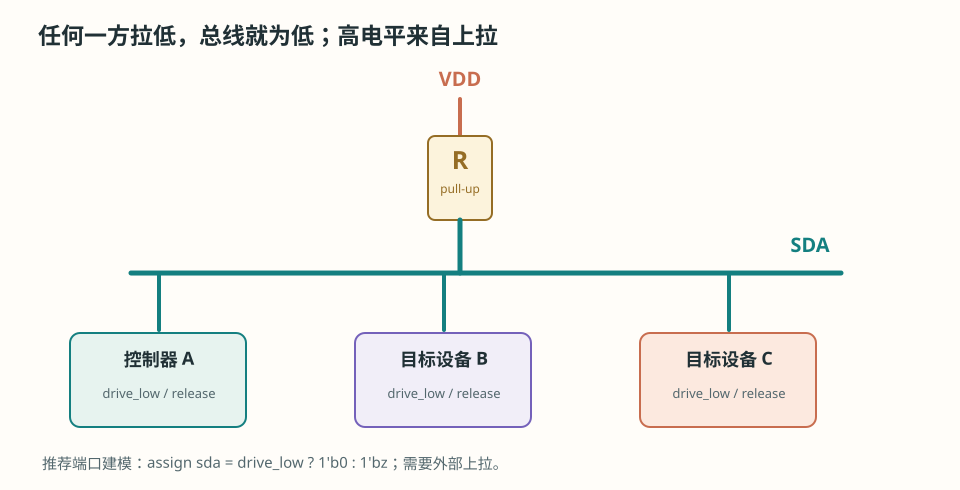
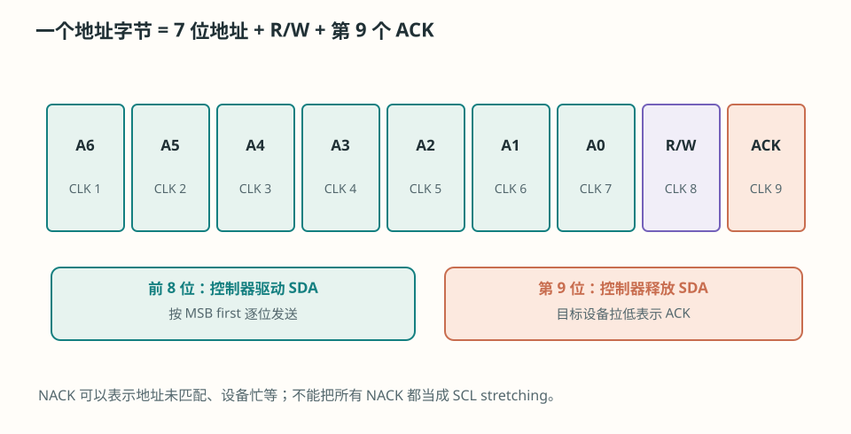
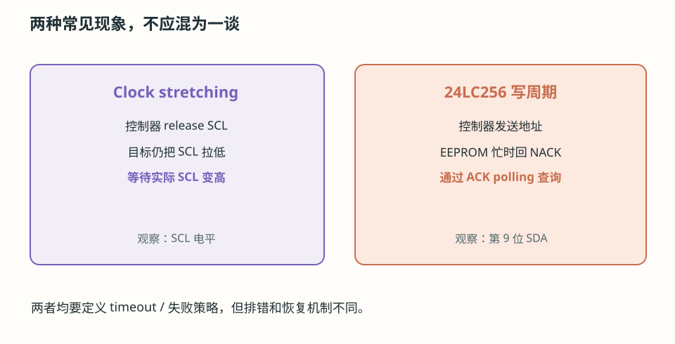

I²C：开漏总线、应答与时钟拉伸
从上拉电阻和线与逻辑到第九个 ACK、SCL stretching、24LC256 ACK polling 与分层实现测试。
01 / 为什么两个器件都能拉低同一根 SDA？
假设控制器和目标设备都能主动输出高、低电平：如果一方输出高、另一方输出低，输出驱动器会发生电气争用。I²C 使用开漏（open-drain）/开集电极驱动：器件只负责主动拉低，或释放线路，高电平来自上拉电阻。

// 顶层 I/O 行为示意：禁止主动输出逻辑 1
assign sda = sda_drive_low ? 1'b0 : 1'bz;
assign scl = scl_drive_low ? 1'b0 : 1'bz;
wire sda_sample = sda;
wire scl_sample = scl;这个示例的 inout 应放在支持双向三态的 I/O 顶层；若放在 FPGA 内部，综合器可能转换成 MUX 结构。外部还需根据总线电容、上升时间和允许灌电流选择上拉电阻，不能固定宣称“4.7 kΩ 适合所有总线”。
I²C 的线与特性（从逻辑角度低电平占优）使 ACK、仲裁与多器件共线成为可能，但要严格遵守各模式的总线时序。
02 / START、地址字节和第九个时钟
START 条件：SCL 为高期间 SDA 从高变低；STOP 条件：SCL 为高期间 SDA 从低变高。普通数据位应在 SCL 高期间保持稳定；数据位通常在 SCL 低期间变化。7 位地址加上 1 位 R/W，再由接收方在第九个 SCL 脉冲上应答。

发送者必须在第九位释放 SDA，接收者有能力拉低 SDA 才能表示 ACK。NACK（保持高）可能意味着地址不匹配、目标忙、错误或接收者不希望继续。多字节读场景中控制器也能用 NACK 结束接收；不能简单把 NACK 归类为总线故障。
03 / SCL 释放不等于物理线已经升高
Clock stretching 是一个目标设备保持 SCL 低电平、暂停控制器推进总线的机制。正确的控制器在释放 SCL 后，还要读回物理 SCL，等观察到高电平并满足高电平时间，才进入下一个状态；还需要定义等待上限与异常退出策略。

仓库新增 i2c_bit_cell.v，仅展示单数据 bit 的低电平设置、释放 SCL、等待 SCL 实际为高、保持高阶段与结束；不包含 START、STOP、ACK、第九位、完整地址或多主仲裁。代码按这个明确的教学范围实现，不能当作完整 I²C 主机使用。
// 只在 SCL 释放之后，才允许等待物理高电平
// line-level sample should be synchronized to FPGA clk
if (state == WAIT_HIGH) begin
scl_drive_low <= 1'b0;
if (scl_sync) begin
state <= HIGH_HOLD;
timer <= 0;
end else if (timeout_expired) begin
state <= IDLE;
error <= 1'b1;
end
end真实 FPGA 中，外部 SCL 是与内部采样时钟异步的 I/O，应考虑同步器、毛刺过滤和高低阶段的时间预算；由简单仿真模拟的 scl_in 不能验证管脚实际爬升时间。
04 / EEPROM 写周期 NACK ≠ 时钟拉伸
原版内容将 Microchip 24LC256 在内部写周期忙碌时的行为描述成“主动拉低 SCL 不放”。查阅其官方数据手册后，这一说法不准确：该系列提供 ACK polling 机制，写周期期间设备不会对轮询地址应答，写操作结束后才恢复应答。应在发送 STOP 触发写周期后重新发送寻址并检测 ACK。
排错时建议同时观察 SDA、SCL 和状态机：
| 观察 | 可能机制 | 下一步 |
|---|---|---|
| 释放 SCL 后仍低 | 时钟拉伸、线路被其他器件下拉或硬件故障 | 检查目标手册、时序上限和线电平 |
| 第 9 位 SDA 高（NACK） | 地址错误、忙碌、不支持命令等 | 验证地址/RW 和设备特定 ACK polling |
| SDA 在空闲时持续低 | 设备停留在部分传输或线路故障 | 根据 UM10204 的 bus-clear 建议尝试恢复 |
| SCL 始终低，无法释放 | 控制器/目标设备或线路故障 | 优先检查是否需要硬件 reset / 电源复位 |
NXP UM10204 对 SDA stuck low 提到通过至多九个时钟脉冲恢复的方式，但它不是对所有硬件状态都有效的万能“解锁按钮”，也不应在未检查 SCL 能释放的情况下盲目发送时钟。
05 / 从 bit-cell 实验到完整控制器的验证路线
先用测试台模拟上拉总线、目标设备延长 SCL 低电平和超时条件，核对比特输出在 SCL 高电平期间不变。再按顺序增加 START/STOP、7 位地址、第九位 ACK、重复起始、写/读、超时恢复、多控制器仲裁。这是一条逐层增加行为和测试证据的工程路线。
iverilog -g2012 -Wall -s tb_i2c_bit_cell -o /tmp/i2c.vvp examples/rtl/i2c_bit_cell.v examples/tb/tb_i2c_bit_cell.v
vvp /tmp/i2c.vvp
bash scripts/run_rtl_tests.sh基础 bit-cell 只覆盖线路释放与等待逻辑。若设计真正的可交付 I²C IP，还必须验证 Standard/Fast/Fast-mode Plus 对应的精确 tLOW、tHIGH、setup/hold、总线电容和上升沿要求，并对每一个由目标支持的可选协议特性设定用例。
如果 EEPROM 不返回 ACK，最先应看 SCL 还是第九个 SDA？
应该同时观察实际 SCL 和第九个 SDA。SCL 可以正常释放但 EEPROM 因内部写周期忙而 NACK，此时按照具体手册做 ACK polling，而不是直接判定 clock stretching。